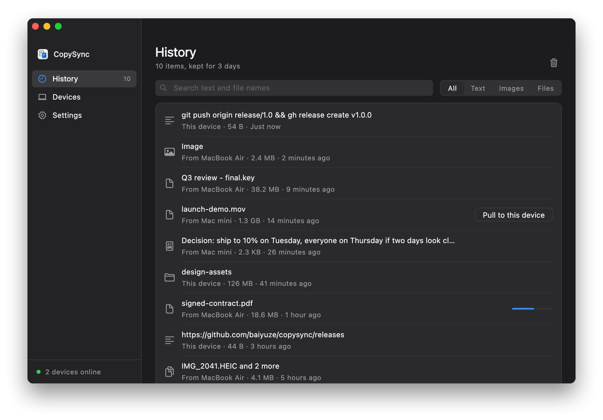

Copy on this computer.
Paste on that one.
Mac and Windows. Text, images, files, whole folders. No shared account required. On the same network it works with no server at all, and it works across networks too. Data moves directly between your devices, end-to-end encrypted.
Version 1.5.0, free and open source. macOS 13 or later, Intel and Apple silicon; Windows 10 and 11.
New here? Set it up in three steps →How your computers connect
On the same network, install the app and pair; no server needed. Across networks, your computers find each other through a server or Tailscale, and nothing you copy is stored there. Pick the way that fits.
Same network
At home or in the office, behind the same router. Install the app on both computers and enter a pairing code. No server, and no computer that has to stay on.
Same network guide → Syncs from anywherePublic server
A Linux VM with a public IP; the smallest one is enough. Every computer connects to it directly, at home, at the office or anywhere else, with nothing extra to install.
Public server guide → Across networks, no serverTailscale
Install Tailscale on each computer under one account and enter the other computer's Tailscale address when pairing. Syncs at home and at the office, with no server and no computer that has to stay on.
Tailscale guide →Not sure? The quick start compares all three.
Everything you copied, on every computer
History keeps the last 3 days, ready to go back on the clipboard; click an image to preview it. Files under 50 MB have already arrived by the time you switch computers, and larger ones are a click away.

What happens when you copy
Text, images, files and whole folders all take the same path.
Notice
On Mac, the background service checks the clipboard's change count at short intervals; reading the count and types needs no permission and never shows a prompt. On Windows, the system tells it the moment you copy.
Send
Text travels inside the message. Images and files under 50 MB are streamed right away. Larger files are announced as a record and sent when you ask for them.
Paste
The other computer stores the content locally, then puts it on the clipboard. What you paste with ⌘V or Ctrl+V is a real local file.
Why not what's already there
Universal Clipboard needs the same Apple ID and both Macs close together. AirDrop asks you to accept every time. Messaging yourself means manual downloads and files left on someone else's server. With one Mac and one Windows PC, none of the built-in options work at all.
| CopySync | Universal Clipboard | AirDrop | Chat apps | |
|---|---|---|---|---|
| Different Apple IDs | Yes | No | Needs accepting | Yes |
| Between Mac and Windows | Yes | No | No | Yes |
| Different networks (home and office) | Yes | No | No | Yes |
| Paste right away, nothing to accept | Yes | Yes | No | No |
| Files and whole folders | Yes | Unreliable | Yes | Zip first |
| Find something you copied earlier | Yes | No | No | Scroll back |
| Content stays off third-party servers | Yes | Yes | Yes | No |
How it works
Your two computers open an encrypted connection to each other. On the same network they find each other on their own; across networks your server introduces them, and relays traffic when a direct path can't be made. The diagram shows the cross-network case.
- Direct WebRTC, DTLS encrypted Data moves only between your computers
- Your server Signaling, STUN, TURN relay
- Relay: only if direct fails
Direct on office networks too
Office networks with two ISPs, or carriers with a pool of NAT addresses, have several uplinks and pick one per destination. A single probe only reveals one of them, so connections end up on the relay. CopySync probes every uplink and tells the peer about all of them.
What it does
- One shared port. All connections send and receive on one local UDP port, so the addresses learned from different servers line up.
- Every uplink probed. Seven IP-diverse servers are queried from that port at once, yielding one address per uplink. Addresses poisoned by DNS are dropped first.
- All of them sent to the peer. The peer tries each address; the one matching the real uplink gets through.
- Uplinks remembered. If a round misses an uplink that keeps ports unchanged, its address is filled in as uplink IP plus local port.
- A rule for who sends first. Some routers lock a port when the other side's packet arrives first. One side announces its addresses first; the other sends to them before announcing its own. Retries alternate the order.
- Relay first, direct later. If the first handshake lands on the relay, CopySync punches again while idle and switches to direct when that works.
Checked against real network topologies
The NAT lab builds these topologies with Linux network namespaces and iptables and runs CopySync's actual connection code through each. It runs on every commit.
| Scenario | Result |
|---|---|
| Single uplink ↔ home router | Direct |
| Two uplinks, previous version (control) | Relay |
| Two uplinks ↔ home router | Direct |
| Four uplinks ↔ home router | Direct |
| Two uplinks, second not probed, no history | Relay |
| Two uplinks, second not probed, with history | Direct |
| Two uplinks ↔ two uplinks | Direct |
| Two uplinks ↔ NAT that randomizes ports | Relay |
| Blocked at first, network recovers later | Relay, then direct |
| Office router locks a port for unsolicited packets | Direct |
| Home router locks a port for unsolicited packets | Relay, then direct after one retry |
| No server, same subnet, found over mDNS | Direct |
| No server, two subnets, one side remembers the address | Direct |
| No server, both block inbound, both remember | Direct |
| No server, both block inbound, only one remembers | No connection (known limit) |
| No server, subnets isolated from each other | No connection |
Measured: a Mac on a 4-uplink office network and one at home could only relay before, capped at 0.6 MB/s by the server's bandwidth. Now they connect directly, about 3 seconds after reaching the server.
Measurements, design trade-offs and lessons learned are in the design document (in Chinese).
Your server can't see what you copy
- No accounts, no stored content. A device's identity is an Ed25519 key, and its ID is derived from the public key, so the server verifies identity without a user table.
- You compare fingerprints when pairing. Both screens show the same two lines: the fingerprint of each device's key. The server could swap keys in transit, but then the two screens would no longer match. That check is what stops a man in the middle.
- Every message after that is signed, so the server can't impersonate your device. The direct channel's certificate is checked again after the handshake; a mismatch drops the connection.
- The relay only forwards ciphertext. TURN carries encrypted packets, and relay credentials are issued per device and expire after 12 hours.
- Same on the local network. What a device broadcasts on the LAN is an anonymous token that changes daily, not its name; the name is added only while Search nearby is open. Pairing still means comparing fingerprints, and every message is still signed.

When things go wrong
Every network is different. Each of these cases was considered, and each has a test.
- Can't find the other computer on the network
- Different subnets, guest networks and Wi‑Fi with client isolation block local discovery. Enter the address shown under the other computer's code when pairing; it's remembered afterwards, and if both computers change addresses you enter it once more in the device list.
- The system blocks the local network
- From macOS 15, the background service needs your permission to reach devices on the local network; Windows asks about the firewall on first run. If either isn't allowed, the app says so and links straight to the fix.
- No direct path between the computers
- Common behind symmetric NAT and corporate firewalls. Traffic switches to the TURN relay on your server, still encrypted, and the device list shows "Relay".
- Public STUN servers unreachable
- Public STUN is unreliable in some regions, including mainland China. Your server runs its own STUN, and clients prefer it.
- Connected through the relay first
- The relay handshake is fast and sometimes beats the direct path. Once connected, the side that started the connection punches again while idle and switches to direct when that works, never in the middle of a transfer.
- The other computer sleeps, drops off or restarts
- A connection that dies silently is noticed, closed and reconnected. Anything you copy meanwhile is kept and added to the other computer's history once it's back, without overwriting what's on its clipboard now.
- Server connection drops
- Reconnects automatically: the delay starts at 1 second and doubles up to 30, with jitter so devices don't all reconnect at once. Devices on the same network keep syncing.
- File too large
- Above the limit only a record is synced, pulled when you need it. If the source file is gone by then, you get a clear message instead of a vague failure.
- Pasting into plain-text fields
- Rich text copied from the web is written as both HTML and plain text, so no markup leaks into what you paste.
- A file name Windows doesn't allow
- Colons, question marks and a few other characters that are fine on a Mac arrive as the matching full-width characters, so the name still reads the same. Two names that differ only in case never overwrite each other.
- Copying a password
- On Windows, password managers mark what they copy as "don't record". CopySync skips it: not synced, not kept in the history.
- Clipboard access not granted yet
- Content isn't read, which would block on a prompt a background process can't show. The app asks you to grant access and links straight to the setting.
- Background service crashes
- launchd on Mac, and CopySync's own supervisor on Windows, restart it, throttled to once every 10 seconds.
- App updated or moved
- On launch the app re-points its login item and restarts the service on the new version.
Install
Install the app on each computer. On the same network you can pair right away; across networks, pick a way for them to find each other. First time? Follow the quick start.
Mac
- Download CopySync.dmg, open it and drag CopySync into Applications.
- Open it from Applications.The first time, macOS says it can't verify the developer: CopySync isn't notarized by Apple yet. Go to System Settings → Privacy & Security and click Open Anyway near the bottom. You only do this once.
- Click Turn on background sync. When macOS asks whether CopySync may read the clipboard or find devices on your local network, allow both.
- To sync across networks, enter your server in Settings as
ws://server-address:8787/signaland press Return. On the same network, leave it empty.
Windows
- Run CopySync-Setup.exe. It installs for the current user, no administrator rights needed.CopySync isn't code-signed yet, so Windows says "Windows protected your PC": click More info, then Run anyway. To skip the installer, get the portable zip.
- Open CopySync and click Turn on background sync. Allow it if Windows Firewall asks. After you close the window it keeps running in the notification area.
- To sync across networks, enter your server address in Settings and press Enter. On the same network, leave it empty.
Ways to connect
No server on the same network. Pick the way that fits; each has a step-by-step guide:
- Same networkNothing to set up
- Public serverSyncs from anywhere
- TailscaleAcross networks, no server
Pairing: on one computer, choose Devices → Add device to show a 6-character code; enter it on the other, and confirm once both screens show the same two fingerprints. On a different subnet, also enter the address shown under the code. Mac with Windows, or two Windows PCs, works the same way.
Specifications
| Version | 1.5.0, released |
|---|---|
| Mac app | macOS 13 Ventura or later; universal binary for Intel and Apple silicon, no Rosetta; about 47 MB download |
| Windows app | Windows 10 (21H2 or later) and Windows 11, x64; installs per user, no administrator rights; about 23 MB download |
| Server | Optional, only for syncing across networks. Linux on x86_64 or ARM64 (systemd or Docker), macOS (Intel and Apple silicon), Windows 10 and 11 x64 (as a service); about 15 MB of RAM |
| Languages | English, Simplified Chinese and Japanese; follows the system by default, switchable in Settings |
| Content | Plain text, rich text, images and screenshots, files, folders; each type can be turned off |
| Transport | WebRTC data channels, direct first with TURN relay fallback; on the same network, mDNS discovery and connection details over UDP 8788; every uplink probed on multi-uplink networks; files streamed as tar + zstd |
| Encryption and identity | End-to-end DTLS; Ed25519 device keys; every signaling message signed |
| Pairing | 6-character code valid for 5 minutes, using an alphabet without look-alikes such as 0/O and 1/I; fingerprints compared by you |
| Auto-sync limit | 50 MB by default, adjustable from 1 MB to 1 GB |
| History | 3 days by default, adjustable from 1 hour to 30 days; expired items removed automatically |
| Measured speed | A 20 MB file transfers in about 330 ms over a direct LAN connection, checksums matching |
| Built with | Go for the background service and server (pure Go calling Win32 on Windows), Flutter for the app (one codebase for Mac and Windows), Protocol Buffers for messages |
| License | GNU AGPL-3.0; a commercial license is available for closed-source use |
Questions
Why do .uuremote_ files keep appearing while UU Remote is running?
UU Remote writes temporary placeholder files to the system clipboard. Older CopySync clients recorded and forwarded them as ordinary files. Version 1.3.2 filters the confirmed placeholder naming pattern on send and receive, and removes placeholder-only history on startup. Ordinary empty, hidden and large files are unaffected. The 50 MB threshold only controls automatic transfer; UU’s UDP P2P setting is unrelated. Upgrade both clients. Other clipboard sync tools may still duplicate ordinary content.
How is this different from Universal Clipboard?
Universal Clipboard needs both devices on the same Apple ID, with Bluetooth and Wi‑Fi on, close to each other, and works only between Apple devices. CopySync works on the same network as soon as it's installed; across networks, both computers reach your server or run Tailscale. So different Apple IDs work, one Mac and one Windows PC work, and so does one at home and one at the office. It also keeps a history and lets you pull large files on demand.
If your Macs share an Apple ID, sit side by side, and you mostly copy text, the built-in feature is already enough.
Can the server see what I copy?
No. With a direct connection the data never touches the server. When it relays, it forwards DTLS-encrypted packets. It keeps no accounts and stores no clipboard content. The code is open, so you can check.
Does it connect directly on office networks with several uplinks?
Yes. These networks pick an uplink per destination. CopySync probes several servers from one port to learn its address on every uplink and sends them all to the peer, which tries each one. A Mac behind a 4-uplink office network connects directly to a home connection in our tests. Peers behind NATs that randomize ports still fall back to the relay.
Do I need my own server?
Not necessarily. When your computers are on the same network, install the app and pair; there's no server.
Across networks there are two ways: a public server, where the smallest VM is enough and sync works from anywhere; or Tailscale on each computer, entering the other computer's Tailscale address when pairing, with no server at all. There's no public CopySync server, so nobody's data passes through anyone else's machine.
No public IP at home. Can I sync between home and the office?
Yes, in two ways. With a public server, run CopySync's server there and connect both computers to it; see the public server guide. Without one, install Tailscale on every computer under the same account and enter the other computer's Tailscale address when pairing; see the Tailscale guide.
Both computers are on the same network. Why can't they find each other?
Check that they're really on the same subnet: wired and Wi‑Fi in many offices, guest networks, and Wi‑Fi with client isolation don't let devices see each other. In that case, on the computer entering the code, click On a different subnet? and enter the address shown under the other computer's code.
On Windows, allow CopySync when the firewall asks on first run; if you clicked Cancel, click Allow under Settings → Local network. On a Mac, turn on CopySync Daemon in System Settings → Privacy & Security → Local Network. More in the same network guide.
Windows? iPhone?
Windows 10 and 11 (x64) are supported and work together with Macs. Files you paste on Windows are real files you can drop into Explorer or Office.
iPhone and iPad aren't supported: iOS doesn't let apps watch the clipboard in the background, so copy-and-it's-there can't work.
Why does the system warn me the first time?
CopySync isn't notarized by Apple yet, and the Windows build isn't code-signed yet; both require paid certificates.
On Mac, open System Settings → Privacy & Security and click Open Anyway near the bottom. On Windows, click More info and then Run anyway in the "Windows protected your PC" prompt. You only do this once.
What about large files?
By default, anything under 50 MB is pushed to the other computer as you copy it, so you can paste right away. Larger files sync as a record; pull them from the history when you need them. The limit is adjustable in Settings.
Is it free? Can my company use it?
Yes. CopySync is open source under the GNU AGPL-3.0, so individuals and companies can use and modify it for free. If you distribute it, or offer a modified version over a network, you publish your source under the same license.
To ship it inside a closed-source product, keep modifications private or run it as a hosted service, get a commercial license.
Two computers, one clipboard.
Version 1.5.0, free and open source. macOS 13 or later, Intel and Apple silicon; Windows 10 and 11.
New here? Set it up in three steps → View the source on GitHub